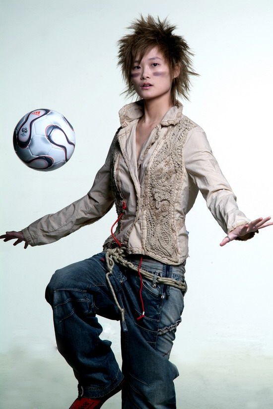
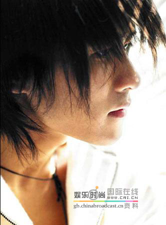
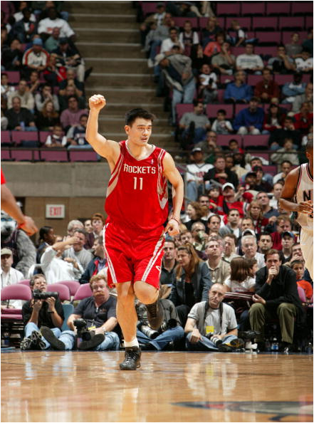
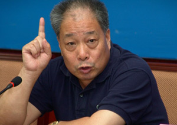
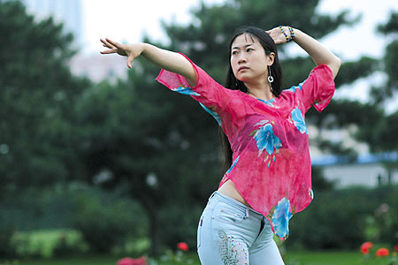
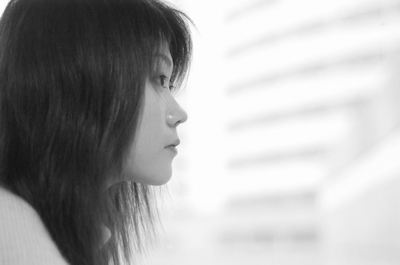
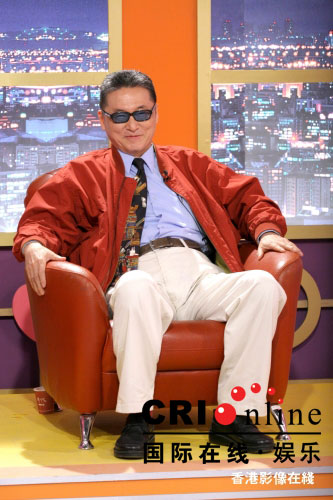
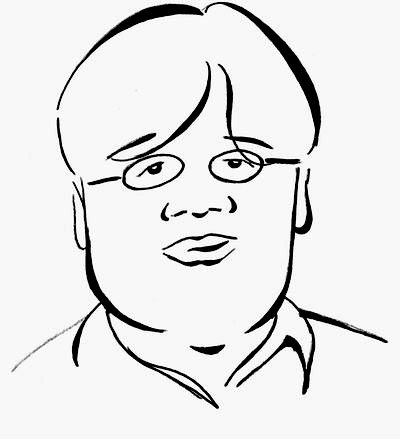
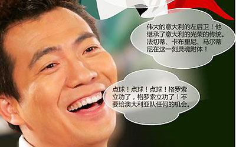

2008年03月22日 星期六 09:51 P.M.
网络最红十大猛人彪悍语录

http://images.qianlong.com/mmsource/images/2006/07/03/qlm060703-2-22.jpg
李宇春
2005年超有人气的李宇春无愧于网络猛人的称号，
所以根据“一人得道，鸡犬升天”的定律，从穿衣走路到说话发呆都成为了最新时尚最火流行。
虽然春春并不是以语言作为主打，可偶然也能一语惊人，曝出冷幽默，让玉米津津乐道，追捧且奉为语录，广为流传。
春春语录是绝对流行快餐路线，即使是平凡的用词，浅显的道理，只要加上春春无辜的表情、率真的个性、坦白的态度还有无人可及的超级人气，那就能立刻拥有广泛的群众基础，风头劲暴形成潮流造成经典。
偶像的力量压死人啊。
春春语录
主持人问：“有网友对宇春说，你其实穿裙子肯定很漂亮，你笑起来的时候还是蛮甜的。有尝试过往可爱里打扮吗。”
宇春：(看了看自己)“我往可爱里打扮，他们受得了吗？”
主持人：大家都说你们是7个天使，仙女。你觉得呢？
春儿：(从头到脚看了一边自己)，你看我像吗？
旁边有人接话：你是天使的领队。
春儿：我是天使的领队？有人说我是很酷的女生，有一天你会从我的歌声中发现我真的很酷，而且……也很温柔。
封闭训练换房间，何洁说小宇挑了一个不好的床，不能看电视，还要负责开门接电话，小宇一脸无奈地说：对这种智商的人表示同情，就不和她计较了。
主持人说春春和BB的歌迷对骂，问她们要对歌迷说什么？
宇春一句爆冷：“辛苦你们了！”
http://images.qianlong.com/mmsource/images/2006/07/03/qlm060703-2-23.jpg
韩寒
凭借着两次新概念作文大赛的成功经历，
韩寒同学登上公众人物的舞台，又由于我们新闻记者敬业的狗仔队精神对其进行坚持不懈深层次挖掘和分析，而让我们这些80年后的同代们对其报以偶像的崇拜和追随，更时时在面对家长和老师的苦口婆心的劝导和拳打脚踢得教育下依然酷酷的甩出一句“如果今天的学习只为了明天的荒废，那学习的意义何在？如果我们为了高考还要不得不一把一把将时间掷在自己将来不可能有建树的或者有接触的学科上的话，那么拜托以后请不要来说教时间是什么金钱银钱之类。”的雷同话语，在看着家长和老师要么勃然大怒，要么语言哽咽的态度时，青春期追求叛逆的我们更不由得不对韩寒饱以无比的热情继续崇拜下去。
韩寒语录
其实高考的压力是完全的经济压力，如果高考前一天，忽然告诉你你爹妈都死了，但是居然卖烧饼的爹妈有几个亿的遗产，我想绝大部分的人会以居高临下的姿态参加考试，并且在碰到一个诸如叫你分析“居然”和“竟然”两词除了笔画不一样多以外有什么区别之类的题目的时候高呼一声：爷不考了！
叛逆的最高级就不能拿F4来说事了，看出去什么都是反的了，就算学校提倡多走楼梯有益健康都觉得不顺耳非得跳楼才满意。
如果世界上所有国家的外汇储备都拿人民币来衡量，那我们就不用学习英语了，至少不用学习到那么辛苦了。
http://images.qianlong.com/mmsource/images/2006/07/03/qlm060703-2-24.jpg
姚明
篮球一直是校园运动的主打产品，
姚明作为这主打产品的中国标签强烈吸引着众多热爱篮球的GGMM的眼球，NBA里可以压制小美的球技让多年来饱受美国轻蔑对待终于获得翻身机会的中国人民盛赞不绝，在中国篮协的扶持下，一夜之间几乎被仰视成民族英雄。
球技过人的姚明在赛场下面对众记者也不含糊，反应敏捷，应对自如，时常妙语连珠，活跃气氛，让大家在观看完紧张激烈的精彩比赛之后还能充分放松神经，精力充沛的投入下一场观战。
姚明的场下表现为他汇聚了更多的人气，力证了：四肢发达不代表头脑简单，身材好也绝不影响智慧发育。
姚明语录
如果麦迪每一场都能像在达拉斯时候的表现，不要说做绿叶陪衬了，做泥土我也愿意。
唔……什么地位？现在上海滩体育圈的老大都不是我了，已经改成刘翔了。
我最关心的就是哪个节日能放假休息，所以哪个节日放假我就喜欢过哪个。
从身体上看我们教练的位置最薄弱。(记者问姚明觉得火箭什么位置最薄弱？)
我的身高放在那里，我只是比较好地利用了这个工具，就像你有一台奔四的电脑就不会再去用奔二的，我放着2米多的身高优势不去用，那岂不是太无聊了，太浪费了。
生活能选择吗？永远都像现在这样，我羡慕你清闲，你羡慕我钱多。
我上身窄下身宽，就像大马拉小车，怎么跑也不累。要是小马拉大车，早吐血了。
尴尬的记者面对尴尬的我问出尴尬的问题，得到尴尬的回答，交出尴尬的文稿，尴尬的主编尴尬地把文章放上报纸的版面。何时是个头啊？
我们不能让比赛的起伏太大，教练本来就没几根头发了……
我知道，中国的篮球水平和世界强队差距还很大，但是看了龙马大战，我才知道，中国的足球和人家相比，那个差距还要大！
http://images.qianlong.com/mmsource/images/2006/07/03/qlm060703-2-25.jpg
张保庆
张保庆的出镜理由不仅仅在于他位置处于学子的视觉中心，
而是对“真的猛人，敢于直面惨淡的人生，敢于正视淋漓的鲜血”给予充分的肯定。
张保庆身为教育部副部长，在言辞谨慎了数年之后，忍无可忍隐忍而发，一改往日“揉面”风格，言词炮轰教育收费的诸多问题，一时间闹的“教育改革”呼声四起。在浩大的声势中，这位部长几乎成了民众英雄，被寄予厚望的改革先锋。
只是这个猛人也难逃“出师为捷身先死”的命运，在“反正我也要退了”的告别演出之后草草退场。
张保庆语录
我调查的结果是，中小学乱收费主要是地方政府的乱收费。不是学校在乱收费，都是地方政府逼着学校乱收费。
有些高校不愿意承担风险，只能是办学行为不够端正，没有看到资助困难学生、推行国家助学贷款机制对高校完成自己的使命——教书育人的重要性。
大学高收费，责任在高校。
http://images.qianlong.com/mmsource/images/2006/07/03/qlm060703-2-26.jpg
杨振宁
杨教授，
老而弥坚，后劲十足，在美国默默无闻酝酿数年之后，年近耄耋后来居上，最近频频语出惊人，曝光于各大媒体。在忘年恋情即将被炒成冷饭之时，又摆出一副语不惊人死不休的架势，盛赞中国大学教育而再度成为新闻头条。
杨教授语句简练却发人深思，每每发言就有无数人开始研究揣测他背后的真正意图，各方争论数月不休。而他却从此沉默让人觉得高深莫测，更加关注。杨教授已然跃居为想出名想疯了的话涝症候群仰视的偶像，顶礼膜拜。
正所谓话不在多，反常才行。杨教授用实际行动向我们证明，敢于逆流的言论永远都具有市场价值。
杨教授语录
从教育年轻人的角度讲，中国大学的本科教育非常成功。
(杨振宁形容翁帆)上帝恩赐的最後礼物，给我的老灵魂，一个重回青春的欢喜。
(记者：能不能帮你的妻子说句话呢，她爱你什么呢？)
杨振宁：我们没有仔细讨论过这个问题，不过我想，我猜想，她觉得我这人是很纯、很真，我想这是她主要欣赏我的地方，这是我的猜想。
(记者：那么杨先生对《易经》开炮？)
杨振宁：不不，对不起，这个话有点原则性的错误，因为我那个文章是叫做《易经对于中国传统文化的影响》，你如果看我整个那篇文章，80%是讲影响非常之大，而且是正面的。只有20%是讲它有负面的影响。之所以那篇文章变得非常有名，在网上变得非常有名是什么呢？因为有些人专看那20%，不看整个的文章。
(记者：1971年你离开中国26年了，为什么突然想到要回国？)
杨振宁：为什么我那么着急回来呢？因为我想我是比较知名的中国的学者，第一个回来的，道理很简单，因为国际的变化是千变万化，很容易一个打开的门又关起来了，所以我就赶快回来了。
http://images.qianlong.com/mmsource/images/2006/07/03/qlm060703-2-27.jpg
芙蓉姐姐
在公众乐此不彼的讨伐声中，
芙蓉姐姐异军突起。
芙蓉姐姐的猛在于她无人可及的自信心，这自信心使的她即使在众人如潮涌的口水唾弃中仍然杂草一般坚强的生存；芙蓉姐姐的猛在于她毫无理由的自恋倾向，超人的自恋让她更加狂热于曝露自己S型的身段和据说隐藏很深的内在魅力娱乐大众；芙蓉姐姐的猛更在于她超凡脱俗的勇敢，这勇敢给了她挑战大众审美耐力公然颠覆传统偶像观念的胆量。
把谩骂和鄙视理解为嫉妒的芙蓉姐姐再一次验证老罗的名言：彪悍的人生不需要解释。
芙蓉语录
我很不快乐，我的不快乐源于我的出众，我那妖媚性感的外形和冰清玉洁的气质让我无论走到哪里都会被众人的目光“无情地”揪出来。我总是很焦点。我那张耐看的脸，配上那副火爆得让男人流鼻血的身体，就注定了我前半生的悲剧。我也曾有过傲人的辉煌，但这些似乎只与我的外表有关，我不甘心命运对我无情的嘲弄，一直渴望用自己的内秀来展现自己的内在美……
这是一所工科院校，自然是女生少得可怜。我刚来报到的第一天，就以我出众的外表和气质，轰动了这所只有两三千学生的小学校。整日被校内外大堆的男生进行情感上的攻击，我实在是受不了了。
http://images.qianlong.com/mmsource/images/2006/07/03/qlm060703-2-28.jpg
董晓磊
董晓磊，
2005年校园文学的代表人物，以理科话涝女生的身份，肆无忌惮野兽派语言风格打破了校园文学唯美的保护层，雄纠纠气昂昂的杀入被文科生占据多年的校园文学自留地。
她逻辑的汇聚了流窜校园多年的经典语句的精华部分，凭借超牛的记忆能力和组织能力把风靡校园的喜剧段子删减精编，加以补充和分析，以做数学题的方式充分利用了素材条件，例证反证旁证了校园爱情的脆弱本质。
晓磊语录
难道有人不喜欢吴彦祖那样的男孩吗。我觉得，爱美之心人皆有之，人，各方面的美都是要追求的，小吴确实是没得挑，喜欢。
你要是在大学混过，就知道“美女作家”是个多么侮辱人格的词，其性质仅比“学生干部”好一点点。
别叫我美少女作家，我有个同学说过：美女作家就是女流氓，美少女作家就是小女流氓。
从我个人来说，不想做偶像，那样首先我不能像以前那样，看见哪个帅哥就发花痴了(谁也不能剥夺我发花痴的权利！)，其次，我不能去食堂抢饭。生活中的这么多乐趣被剥夺了怎么行，我做平常人多好。
http://images.qianlong.com/mmsource/images/2006/07/03/qlm060703-2-29.jpg
李敖
李敖在北大言语挑衅，
用一句“北大太孬了”语惊四座，引得北大学子气血上涌，一时间成为各大高校关注的焦点，成为高校茶余饭后的话题人物，以绝对强势杀入了校园猛人悍语的阵营。
李敖言如其名，说话个性桀骜不逊，把口无遮拦发挥的淋漓尽致。本着知无不言，言无不尽的原则，
在别人都修身养性的年纪，还能精力充沛、激情彭湃的愤世嫉俗，毫不留情的攻击别人软肋，社会弊病，是个名副其实的超龄愤青。他善于使用煽动性语句，尖锐犀利，插科打诨，用风趣诙谐的语素把流行于市井己千年的唾骂型语言包装重组，镀金再造，提升到了文化的高度。
李敖北大演讲语录
我必须和大家说，接下来这个演讲的时候是刘长乐老板告诉我，最后我问他一句话，把他问得楞住了，我说有没有铺红地毯？他说柯林顿有、连战有，你没有。我说为什么我没有？他说，北大尊敬你，把你当成学术演讲，所以不铺红地毯，校长是不是这个意思？我说好，我做学术演讲，讲得好就是学术演讲，讲不好，讲一半，铺红地毯还来得及。
那个时候北大怎么样对待政府，教育部公文来了退回不看，北大多狠，教育部钱来了，收进来了。现在的北大太孬了，在我看来，什么原因，怎么样可以不孬，我们的书记站起来，校长站起来，像我们以前的老校长马寅初不就是这样吗？
世界三大男高音帕华洛帝，一上来就是这个姿势(双手张开)，请你们鼓掌，为什么鼓掌，因为我太传神了，你们都忘了鼓掌了。
http://images.qianlong.com/mmsource/images/2006/07/03/qlm060703-2-30.jpg
郭敬明
大部分语言精辟的猛人没有外形资本，
最多只可以自恋自己的才华，而郭敬明很明显比别的名人更多了一些自恋的机会，相对于才华，他更迷恋自己的花样美男外形，其迷恋程度之强，以至于偶们跌破眼镜也不敢相信这个一向以温柔婉约唯美伤感的文风闯荡文坛的才子小郭弟弟也有绝对爆笑的生活一面。他的人生理念就是：天生丽质不足够，还更要懂得养护二和一，温柔里轻松获得最强悍的美丽容颜。
于是乎，郭弟弟凭借自身已被证明的魅力，拉拢了一批自恋男生，在“爱自己，爱自己”的高歌声中我行我素，奋勇前进。
小四语录
谁和我一起不显胖啊……哎。和我一起拍照的人真作孽啊……
我的脸很占便宜……其实真人我太瘦了……上镜脸……作孽啊……
睡衣……睡衣是什么东西……阿拉从来不用
裸睡身体好。血液循环好。皮肤好……皮肤好啊！！
(旁人：小四这样打扮真的好帅啊！！！！！！！！！穿上衣服感觉很好呀～～～) 听这话好象我以前都是裸体出来溜达的……>_ 虽然我不是明眼人……
可是我看到“银子”两个字的时候就会特别明眼了~~
(提问：小四你三十那天跑来长沙做什么啊？……难道也是工作需要？……)
回答：陪某某和某某某花天酒地……顺便工作……
我很默默……我是纯洁的花季少男……
老罗
混迹校园，
如果你不知道老罗其人，我劝你赶紧低调一点发愤图强，下载一部老罗语录全集饿补一番，不然必定要被鄙视的目光光顾到夹着尾巴做人的程度。
老罗，男，在写诗十年仍然徘徊在九流线的打击之下沦落为一名GRE讲师。步入教师行列仍然不能安分守己，也不能安分守己，不甘于孤芳自赏，勇敢发掘自己长处，在充分肯定自己伟人一样高尚的人格的同时，坚持不懈的给自己的“扯淡”才能不断曝光的机会，充分运用自己过剩的语言天分娱乐课堂。以其不遗余力地自恋，踩人不倦的精神，大众通俗的语言，绝对彪悍的人生原则迅速走红各大校园，当之无愧成为猛人之首。老罗语录也因为巨强的打击力度，超广的打击范围和毫无遮拦的真情实感愤世嫉俗深入人心。
http://images.qianlong.com/mmsource/images/2006/07/03/qlm060703-2-31.jpg
老罗语录
语录1、彪悍的人生不需要解释！
语录2、像我这种牛人，想找个人佩服一下的时候我就去照镜子。
语录3、在美国的研究生院里中国学生从来不参加课堂讨论，以至于教授都以为他们什么都不会。可是一考试就是第一一考试就是第一，那美国教授不就崩溃了吗？他根本理解不了，于是感叹道“啊，神秘的东方！”
语录4、他跟你要八块你转身就走，这时候他一般就会说“五块怎么样”，你一看差不多也就成交了。有一回下课的时候，一个学生特兴奋地跑到前面跟我说“老罗，我砍到了三块八！”。我心想，太无耻了！盗版小贩也是人啊！
语录5、最土最庸俗最家常便饭的就是孔子。所以得到广泛流传。象老子庄子那都太酷啦。从远处骑个小毛驴戴个墨镜。走过你身边。然后消失在远方，可是你还觉得那墨镜在他背后。巨酷无比。语言所不能表达的就是禅，最酷。不能渐悟，只能顿悟。师傅拿个棍子。你问∶“什么是禅啊，我怎么还没悟到啊？”师傅上去就一棍子打在头上∶“接着悟！”当时有多少徒弟被打傻打死啊。有的徒弟聪明，被打了一下，就“啊，我懂了！”于是下山收徒弟，手里也拿个棍儿，徒弟说悟不出，上去就打∶“接着悟！”聪明的徒弟怎么样啊？也不用接着悟，也不用挨打，直接拿个棍就下山收徒弟。办起住宿班、冲刺班、12周班、15周班……
http://images.qianlong.com/mmsource/images/2006/07/03/qlm060703-2-32.jpg
黄健翔
2006世界杯，
6月26日23时，意大利VS澳大利亚之战，黄健翔疯了。沉闷的比赛让人昏昏欲睡，谁想比赛尾声的那粒点球让黄健翔一夜间成了网络上的红人。激情的演说震撼了许多人，也遭到了多方的质疑。但是黄健翔火了，那3分多钟的激情解说成了经典，下载量居高不下，各种方言的恶搞版层出不穷，黄健翔的狂吼声也出现在手机铃声和彩玲中。甚至有网友说，黄健翔带来了解说的新时代。
黄健翔语录
1、全世界大概除了东道主德国，也就只有中国这么干了。我个人坚决反对，一点意义都没有。——央视本届世界杯全部46场比赛除了5场在后方解说之外，其余59场全部在现场解说
2、第一个趴下的一定不是我。少出毛病，这事儿我比他们谁都干得好。——本届世界杯
3、有人能说他是央视娱乐节目的底线，我凭什么不能说我就是中国电视体育解说的标准？我就是！我还不光是说足球的，其实我觉得体育解说我都算是说得不错的，奥运会那么多项目我解说，有哪个说老百姓听不下去要骂街骂我呀！
4、还好我还不是赵薇、章子怡，不是张纪中、窦唯，我们相比之下还是毛毛雨啦，他们天天在暴风骤雨里面生活。但这种事情会让我产生动摇，我凭什么呀？我又没挣那么多钱，凭什么受这份气？
5、体育在人的一生当中不是比一个胜负那么简单，它是一种人格的能力。这是国家教育的大问题，必须从现在开始抓，你耽误一年就是一批人。高速路晚建一年可能问题不大，但人的教育晚一年，他就长过去了！
6、现在比赛进入垃圾时间，我们把时间交给朱广沪。。。——西班牙在进四球之后，有几分钟无聊地倒了几次脚，黄健翔不失时机地赶紧说道。
激情解说：
——亚昆塔，点球！点球！点球！格罗索立功了，格罗索立功了！不要给澳大利亚队任何的机会。
——伟大的意大利的左后卫！他继承了意大利的光荣的传统。法切蒂、卡布里尼、马尔蒂尼在这一刻灵魂附体！格罗索一个人他代表了意大利足球悠久的历史和传统，在这一刻他不是一个人在战斗，他不是一个人！
——托蒂，面对这个点球。他面对的全世界意大利球迷的目光和期待。
——施瓦泽曾经在世界杯预选赛的附加赛中扑出过两个点球，托蒂应该深知这一点，他还能够微笑着面对他面前的这个人吗？10秒钟以后他会是怎样的表情？
——球进啦！比赛结束了！意大利队获得了胜利，淘汰了澳大利亚队。他们没有再一次倒在希丁克的球队面前，伟大的意大利！伟大的意大利的左后卫！马尔蒂尼今天生日快乐！意大利万岁！
——这个点球是一个绝对理论上的决杀。绝对的死角，意大利队进入了八强！
——胜利属于意大利，属于格罗索，属于卡纳瓦罗，属于赞布罗塔，属于布冯，属于马尔蒂尼，属于所有热爱意大利足球的人！
——澳大利亚队也许会后悔的，希丁克，他在下半时多一人的情况下打得太保守、太沉稳了，他失去了自己的勇气，面对意大利悠久的历史，他没有再拿出他在小组赛中那种猛扑猛打的作风，他终于自食其果。他们该回家了，他们不用回遥远的澳大利亚，他们不用回家，他们大多数人都在欧洲生活，再见！